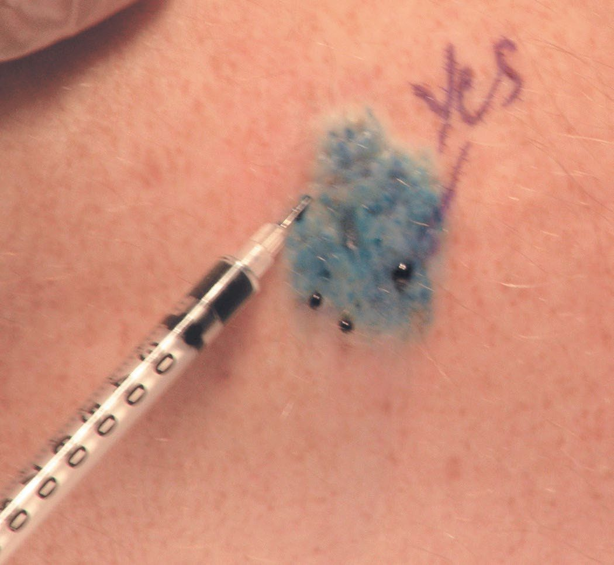

Principles of Cancer Surgery
Summary
- Cancer surgery encompasses diagnosis and staging, removal of primary and metastatic disease, reconstruction, prevention and palliation, not simply resection [1].
- Malignant transformation is a multistep genetic process that confers uncontrolled proliferation, invasion and metastatic potential on a clonal cell population [2].
- Modern management is delivered by a multidisciplinary team using accurate histological diagnosis, anatomical staging and, increasingly, molecular characterisation to select surgery, radiotherapy and systemic therapy [1].
- The one NICE document that applies to every cancer topic in this reference is NG12, Suspected cancer: recognition and referral.
- It is organised by site of cancer and by symptom, but three of its sections are generic principles that govern the whole of surgical oncology: patient information and support, safety netting, and the diagnostic process [3].
- Its own framing instruction is that where there is still uncertainty about whether a referral is needed, consider contacting a specialist, and consider a review for anyone with a symptom associated with increased cancer risk who does not meet the criteria for referral or investigative action [3].
- Two administrative rules carry real clinical weight.
- Once the decision to refer has been made, the referral must be made within 1 working day [3].
- And local arrangements must ensure that letters about non-urgent referrals are assessed by the specialist, so that the person can be seen more urgently if necessary, the mechanism by which a mis-triaged cancer is caught [3].
- Local arrangements must also identify people who miss their appointments so they can be followed up [3].
- Safety netting is a named process, not an attitude.
- Ensure the results of investigations are reviewed and acted upon, with the healthcare professional who ordered the investigation taking or explicitly passing on responsibility for this, and be aware of the possibility of false-negative results for chest X-rays and faecal occult blood tests [3].
- For a person who has a symptom associated with increased cancer risk but does not meet referral criteria, consider a review that is either planned within an agreed time frame or patient-initiated if new symptoms develop, concern continues, or symptoms recur, persist or worsen [3].
- On communication, NG12 requires one specific reassurance to be given.
- Explain to people being referred that they are being referred to a cancer service, and reassure them, as appropriate, that most people referred will not have a diagnosis of cancer, discussing alternative diagnoses [3].
- Information should cover where the person is being referred, how long they will wait, what to expect from the service, what tests may be carried out, how long results will take, whether they can bring someone, who to contact if no appointment is confirmed, and other sources of support [3].
Where metastatic disease is found before a primary is identified, the pathway switches to CG104, which requires every hospital with a cancer centre or unit to establish a CUP team and to upgrade patients to the existing cancer waiting times pathway when malignancy of undefined primary origin is suspected or first diagnosed [4].
Definition
- Neoplasia ("new growth") is the uncontrolled proliferation of cells; the term tumour, originally describing an inflammatory swelling, is now used interchangeably with neoplasm [2].
- Transformation is the multistep process by which normal cells acquire malignant characteristics, including tissue invasion and the ability to metastasize to distant sites, with each step reflecting one or more genetic alterations that confer a growth advantage [2].
- Cancer cells acquire a defined set of characteristics, establishing an autonomous lineage, resisting growth-inhibitory signals, sustaining proliferative signalling, obtaining replicative immortality, evading apoptosis, acquiring angiogenic competence, invading and disseminating, evoking inflammation, evading immune detection, losing specialised cell function, and altering energy metabolism, based on the Hanahan and Weinberg "hallmarks of cancer" [1].
Pathophysiology
- Cancer cells escape the normal checks and balances that regulate proliferation; oncogenes (mutated growth-control genes) and loss of tumour-suppressor gene function together permit unrestrained growth, usually requiring multiple sequential mutations, as demonstrated by the multistep model of colorectal tumourigenesis (APC → K-ras → DCC → p53) [1][2].
- Replicative immortality is achieved via telomerase, which prevents the telomere shortening that normally limits cells to 40–60 divisions (Hayflick hypothesis) [1].
- Apoptosis evasion follows loss of tumour-suppressor genes such as p53 (chromosome 17, cell-cycle arrest/apoptosis), Rb1 (chromosome 13, cell-cycle regulation), APC (chromosome 5) and DCC (chromosome 18, cell adhesion) [5].
- A tumour mass cannot exceed about 1 mm in diameter without acquiring a blood supply (angiogenesis); VEGF drives endothelial proliferation, vascular permeability and lymphangiogenesis [1][6].
- Invasion occurs via increased interstitial pressure, secretion of matrix metalloproteinases that degrade extracellular matrix, and integrin-mediated cell detachment and motility (epithelial–mesenchymal transition) [1][6].
- Metastasis is an inefficient process, only a small subset of disseminated cells forms micrometastases, and an even smaller number progress to macrometastases; the "seed and soil" theory holds that a cancer cell's ("seed") growth in a secondary site depends on compatibility with that organ's microenvironment ("soil") [6].
- Tumour dormancy, in which recurrence can occur decades after apparently curative treatment of the primary, may reflect loss of host immunologic control of subclinical disease [6].
- Tumour growth follows a Gompertzian curve: exponential in early stages, with the growth rate slowing as the tumour enlarges because of nutrient and oxygen competition [1].
- Cancer cells also alter energy metabolism, favouring aerobic glycolysis (the Warburg effect) even when oxygen is available [1].

Hallmarks of cancer and oncogene biology
- Schwartz builds the biology around Hanahan and Weinberg's six essential alterations, self-sufficiency of growth signals, insensitivity to growth-inhibitory signals, evasion of apoptosis, limitless replicative potential, angiogenesis, and invasion and metastasis, with two more recently added, reprogramming of energy metabolism and evasion of immune destruction, each now a drug target (EGFR and cyclin-dependent kinase inhibitors, PARP inhibitors, anti-VEGF and HGF/c-Met agents, telomerase inhibitors, BH3 mimetics, anti-CTLA-4 and anti-PD-1 antibodies) [8].
- The transformed phenotype in culture shows loss of contact inhibition, altered appearance and poor adherence, loss of anchorage dependence, immortalisation and tumourigenicity on injection into a host [8].
- Tumourigenesis proceeds through initiation, promotion and progression; although tumours arise from a single clone, many normal-appearing cells in the target organ may already carry the initiating event (the field effect) and most tumours pass from benign lesion to in situ to invasive cancer, as in atypical ductal hyperplasia → DCIS → invasive ductal carcinoma; Fearon and Vogelstein's colorectal model requires mutation of at least four or five genes, with inactivation of tumour suppressors the predominant change [8].
- Proto-oncogenes (over 100 identified) are activated by translocation (abl), promoter insertion (c-myc), point mutation (ras) or amplification (HER2/neu) and encode growth factors (PDGF), growth factor receptors (HER2), signal transducers (ras) or nuclear transcription factors (c-myc); protein tyrosine kinases account for a large share of known oncogenes [8].
- Mitogens drive a quiescent cell from G0 into G1, and once past the restriction point mitogens are no longer needed for progression into and through S phase; checkpoints exist in G1, S, G2 and M, and progression is governed by cyclin–cyclin-dependent kinase complexes [8].
- HER2 (neu, c-erbB-2) is Schwartz's worked example: it has no direct soluble ligand yet is the preferred heterodimerisation partner for the other EGFR-family receptors, which bind at least 30 ligands; heterodimerisation with HER2 favours receptor recycling over degradation, prolongs and strengthens signalling through MAPK and PI3K/Akt, and its amplification in breast, ovarian, lung, gastric and oral cancers produces ligand-independent kinase activation, anchorage-independent growth, resistance to pro-apoptotic stimuli, MMP up-regulation and invasiveness; HER2 mutations (about 3% of lung cancers) respond to the irreversible inhibitor neratinib, and approved anti-HER2 agents span the antibodies trastuzumab and pertuzumab, the small molecule lapatinib and the antibody–drug conjugate ado-trastuzumab emtansine [8].
- Apoptosis is executed by caspases (initiators 8, 9 and 10 cleaving executioners 3, 6 and 7) through the mitochondrial (intrinsic) pathway, in which cytochrome c, procaspase 9 and Apaf-1 form the apoptosome and the Bcl-2 family (pro-apoptotic Bax, BAD, Bak; anti-apoptotic Bcl-2, Bcl-xL) governs membrane permeability, and the death-receptor pathway, in which Fas/CD95, TNFR1 and DR5 bound by Fas-L, TNF and TRAIL form a death-inducing signalling complex that cleaves procaspases 8 and 10; regulation comes from decoy receptors (DcR3 for Fas; TRID and TRUNDD for TRAIL), FLIPs that block caspase 8 activation, and IAPs that block caspase 3, and cancers exploit all of these, decoy over-expression, Bcl-2 and survivin over-expression, c-FLIP, loss of Bax, caspase 8 or death receptors, p53 defects and PI3K/Akt activation [8].
- Invasion requires breaching the basement membrane (the in situ/invasive boundary) through altered adhesion (cadherins normally suppress invasion), motility mediated by at least 25 integrin α/β pairings binding fibronectin, laminin and collagen, and matrix proteolysis [8].
- Angiogenesis, first shown by Folkman in 1971, is driven above all by the six VEGFs (A–E and placental growth factor) acting on VEGFR1–3 and neuropilins, induced by hypoxia, EGF, PDGF, TNF-α, TGF-β and IL-1β, and balanced by angiopoietin-1 (stabilising via Tie-2) against its antagonist angiopoietin-2; VEGF-C and VEGF-D drive lymphangiogenesis through VEGFR3, and microvessel density independently predicts distant metastasis and survival [8].
- Metastasis is a sequential cascade in which dormancy (recurrence decades after breast cancer, though rare after 20 years) is explained by solitary quiescent cells, pre-angiogenic micrometastases in which proliferation balances apoptosis, or loss of immune control; organ preference is explained 66% by blood flow alone and otherwise by Paget's seed-and-soil compatibility, oncogenes such as HER2 and ras potentiate metastatic steps, and the epithelial–mesenchymal transition orchestrated by Snail, Twist, Slug and Zeb1/2 (repressing E-cadherin, inducing vimentin) confers migration, invasion and apoptosis resistance; the cancer stem cell hypothesis holds that only a small clonogenic fraction drives growth and that current drugs shrink tumours without killing that fraction [8].
Clinical features
- Patterns of spread have clinical diagnostic significance: a suspicious supraclavicular node (Virchow's node) suggests primary cancer of the neck, breast, lung, stomach or pancreas; a suspicious axillary node suggests lymphoma, breast cancer or melanoma; a periumbilical node (Sister Mary Joseph's node) suggests pancreatic cancer; ovarian metastases from stomach cancer are called a Krukenberg tumour; bone metastases are most commonly from breast (most common) or prostate cancer; skin metastases arise from breast cancer or melanoma; and small bowel metastases are most commonly from melanoma [5].
- Lymph nodes have poor barrier function and should be regarded as a sign of probable metastasis rather than a filter that reliably contains disease [5].
- Nodal status is the most important prognostic indicator for lung and breast cancer in the absence of systemic metastases, whereas tumour grade is the most important prognostic indicator for sarcoma without systemic metastases [5].
Schwartz's 2017 United States estimates are 1,688,780 new cancers (excluding in situ disease other than bladder and excluding basal and squamous skin cancers, with a further 63,410 breast and 74,680 melanoma in situ) and 600,920 deaths, about 1650 a day; lung, colorectal and prostate cancers lead male deaths and lung, breast and colorectal female deaths, and lung cancer incidence is fourfold higher in Kentucky than Utah, tracking smoking prevalence [8]. Worldwide, stomach cancer (988,000 cases in 2008, 7.8%) is the fourth most common malignancy and second cause of cancer death, over 70% in developing countries and half in Eastern Asia; breast cancer incidence ranges from 19.3 per 100,000 in Eastern Africa to 89.7 in Western Europe with susceptibility genes explaining only 5–10% of cases, so geography reflects reproductive factors, diet, alcohol, obesity and activity; colon cancer varies 25-fold; and liver cancer (85% in developing countries, mortality:incidence ratio 0.93) is the third cause of cancer death, driven by hepatitis B and C and aflatoxin, with childhood hepatitis B immunisation already reducing incidence [8].
Aetiology
- Both inheritance and environment contribute to cancer development, with the balance varying by tumour type, non-small cell lung cancer is overwhelmingly attributable to smoking (about 80% of cases), whereas germline BRCA1 mutation confers a 60–90% lifetime risk of breast cancer independent of environmental exposure [1].
- Hereditary cancer is suggested by tumour development at a younger age than usual, bilateral disease, multiple primary malignancies, cancer in the less commonly affected sex (e.g., male breast cancer), clustering of the same cancer type in relatives, and association with conditions such as intellectual disability or pathognomonic skin lesions, but not by paraneoplastic syndromes [6].
- Key familial cancer syndromes include Li-Fraumeni (TP53, autosomal dominant: sarcoma, breast cancer, brain tumours, leukaemia, adrenocortical carcinoma), familial adenomatous polyposis (APC), Lynch syndrome/HNPCC (DNA mismatch repair genes MLH1, MSH2, MSH6), Cowden syndrome (PTEN: breast, thyroid, endometrial cancer), MEN2 (RET: medullary thyroid cancer, phaeochromocytoma) and hereditary diffuse gastric cancer (CDH1) [2][5].
- Infectious causes of cancer include human papillomavirus (cervical cancer), Helicobacter pylori (gastric cancer), hepatitis B and C (hepatocellular carcinoma), and Epstein-Barr virus (Burkitt lymphoma, nasopharyngeal carcinoma) [5].
- Chemical and physical carcinogens include coal tar (larynx, skin, bronchial cancer), beta-naphthylamine (bladder cancer), benzene (leukaemia) and asbestos (mesothelioma) [5].
- Proto-oncogenes implicated in carcinogenesis include ras (GTPase defect), src (tyrosine kinase defect), sis (PDGF receptor defect), erb B (EGFR defect) and myc family transcription factors [5].
- Obesity is an established risk factor for cancers of the oesophagus, colorectum, gallbladder, pancreas, liver, stomach, postmenopausal breast, uterus, ovary, kidney and thyroid, and contributes to up to 20% of cancer-related deaths worldwide [2].
Cancer genomics and hereditary syndromes
- About 300 genes are causally implicated in cancer (90% mutated somatically, 20% in the germline and 10% both) and each tumour carries dozens to hundreds of alterations, so "driver" mutations that confer growth advantage and are positively selected must be distinguished from the majority of "passenger" or bystander mutations; heterogeneity exists between patients, between primary and metastases, and spatially within one tumour, and resistance mutations may predate treatment [8].
- Over 70 genes cause hereditary cancer, mostly tumour suppressors; Knudson's two-hit hypothesis arose from retinoblastoma, hereditary cases carry one germline and one somatic hit, sporadic cases two somatic hits, a hit being a point mutation, allelic loss, loss of heterozygosity or gene silencing, about 40% of retinoblastomas are hereditary RB1 cases and these children also risk a midline intracranial tumour, most commonly pineoblastoma [8].
- Classic Li-Fraumeni syndrome requires a bone or soft-tissue sarcoma before 45, a first-degree relative with cancer before 45, and another first- or second-degree relative with sarcoma at any age or any cancer before 45; about 70% of families carry germline p53 mutations, and breast cancer, sarcoma, osteosarcoma, brain tumours, adrenocortical carcinoma, Wilms' tumour and phyllodes tumour are strongly associated [8].
- For BRCA1 carriers (17q21, 208 kDa protein) the cumulative risks by 70 are 87% breast and 44% ovarian; for BRCA2 (13q12.3, 384 kDa) 84% and 27%, with 76% of families with both male and female breast cancer being BRCA2 and BRCA2 also conferring fivefold gallbladder and bile-duct, fourfold pancreatic and threefold gastric and melanoma risk; both proteins act in DNA repair and recombination, checkpoint control and transcription, and founder mutations are prevalent in Ashkenazi Jews [8].
- APC mutation is found in FAP and 80% of sporadic colorectal cancers and is the earliest known alteration; genotype–phenotype correlation places desmoids with mutations between codons 1403 and 1578 and attenuated FAP with mutations at the extreme 5′ or 3′ ends or the alternatively spliced region of exon 9 [8].
- HNPCC/Lynch syndrome (Lynch 1 colonic, mean onset about 44 with synchronous and metachronous cancers; Lynch 2 adding endometrium, ureter and renal pelvis, stomach, small bowel, ovary and pancreas) is defined by the Amsterdam II criteria, three or more relatives with an HNPCC-associated cancer, one a first-degree relative of the other two, two successive generations, one case before 50, FAP excluded, tumours verified pathologically, and results from germline mutation of mismatch repair genes hMLH1, hMSH2 (the two most common), hMSH6, hPMS1 and hPMS2, producing microsatellite instability graded high, low or stable by PCR against adjacent normal epithelium; 8% of colorectal cancers before 50 harbour an unsuspected mismatch-repair mutation, so multigene panel testing is advised [8].
- PTEN (403 amino acids, exon 5 hot spot holding 43% of mutations) releases PI3K/Akt in Cowden disease, whose pathognomonic trichilemmomas and mucocutaneous papillomatosis accompany thyroid adenomas, breast fibroadenomas and hamartomatous polyps, with breast cancer in 25–50% of affected women; p16/CDKN2A germline mutations occur in 20% of melanoma-prone families and, when they disable CDK4/6 inhibition, raise melanoma risk 75-fold and pancreatic cancer 22-fold (functionally silent mutations raise melanoma 38-fold without pancreatic risk); CDH1 carriers have a 70–80% chance of diffuse gastric cancer, with lobular breast cancer the other CDH1 tumour; and gain-of-function RET mutations cause medullary thyroid cancer alone or MEN2A (phaeochromocytoma 50%, parathyroid adenoma 20%) and MEN2B (marfanoid habitus, mucosal neuromas, ganglioneuromatosis), with RET mutations also in half of sporadic medullary cancers [8].
- Penetrance and phenotype vary among carriers of identical mutations through environmental influence or genetic modifiers of risk [8].
Chemical, physical and viral carcinogens
- John Hill linked snuff to nasal cancer in 1761; 60–90% of cancers are now attributed to environment.
- Chemicals are genotoxins (initiate by mutation), cocarcinogens (potentiate genotoxins) or tumour promoters (act after genotoxin exposure); the IARC registry grades agents as Group 1 proven (occupational epidemiology), 2A probable, 2B possible (more than one animal species), 3 unclassifiable and 4 probably not carcinogenic, and Group 1 examples include aromatic amines and benzidine dyes (bladder), soot, coal tar and mineral oils (skin), aflatoxin (hepatocellular carcinoma), benzene (acute non-lymphocytic leukaemia), vinyl chloride (hepatic angiosarcoma), formaldehyde (nasopharynx, leukaemia), sulphur mustard (lung) and strong inorganic acid mists (larynx) [8].
- Physical carcinogenesis works through chronic irritation and proliferation, foreign bodies, non-healing wounds, burns, inflammatory bowel disease, H. pylori gastritis, Opisthorchis viverrini cholangiocarcinoma, or direct DNA damage: asbestos fibres longer than 10 µm escape phagocytosis and are engulfed by proliferating epithelium, generate reactive oxygen and nitrogen species and, coated with polycyclic aromatic hydrocarbons from smoke, increase PAH uptake while both impair clearance, so physical and chemical carcinogens are synergistic [8].
- Ionising radiation, recognised within 20 years of Roentgen's 1895 discovery and confirmed at Hiroshima and Nagasaki in virtually every tissue, causes base damage, cross-links and single- and double-strand breaks; misrepaired double-strand breaks, fixed by error-prone non-homologous end joining, produce rearrangements and deletions that inactivate tumour suppressors, genomic instability persists for at least 30 cell generations, and unirradiated neighbours are at risk through the bystander effect; UV drives most non-melanoma skin cancer, and xeroderma pigmentosum and ataxia telangiectasia confer radiation-sensitive phenotypes [8].
- Rous transmitted chicken sarcoma by cell-free extract in 1910; about 15% of human tumours are viral.
- Retroviruses integrate permanently and either carry cellular proto-oncogenes captured by recombination (src, abl, erbB, ras, myc and others) or activate a neighbouring proto-oncogene by promoter insertion, whereas DNA tumour virus oncogenes are viral, act in non-permissive cells and mostly bind p53 and Rb; established associations are EBV (Burkitt's, Hodgkin's, immunosuppression lymphoma, sinonasal T-cell lymphoma, nasopharyngeal carcinoma), HBV and HCV (hepatocellular carcinoma, HCV carries a 1–3% risk after 30 years), HIV-1 (Kaposi's, cervical cancer, NHL), HHV-8 (Kaposi's), HPV 16/18 (cervix, vulva, vagina, penis, oropharynx, anus), HTLV (adult T-cell leukaemia/lymphoma) and Merkel cell polyomavirus [8].
- Vaccination prevents: childhood HBV vaccination has cut liver cancer in East Asia, HPV vaccine in naive women substantially reduces HPV16/18 cervical precancer and cancer and may reduce oral HPV infection, and the American Cancer Society recommends routine vaccination at 11–12 (from age 9), catch-up for females 13–26 and males 13–21 (males 22–26 may be vaccinated), and up to 26 for men who have sex with men and the immunocompromised, noting that older vaccination is less effective [8].
Diagnosis
- Accurate histological or cytological diagnosis is essential before definitive treatment; core needle biopsy provides architecture (histology) while fine-needle aspiration provides cytology (cells only) [1][5].
- Tumours are graded by degree of differentiation (well/G1, moderate/G2, poor/G3 for most squamous and glandular tumours), with prostate cancer graded separately using the Gleason system, summing the two most prevalent architectural patterns (score 6 to 10) [1].
- Staging (the TNM system, maintained by the Union for International Cancer Control and compatible with the American Joint Committee on Cancer system) maps the anatomical extent of disease using tumour size/invasion (T), nodal involvement (N) and distant metastasis (M), and is used both to estimate prognosis and to select treatment [1].
- Serum tumour markers commonly used include CEA (colon cancer, half-life 18 days), AFP (hepatocellular and germ-cell cancer, half-life 5 days), CA 19-9 (pancreatic cancer), CA 125 (ovarian cancer), beta-hCG (testicular cancer, choriocarcinoma), PSA (prostate cancer, high sensitivity but low specificity, half-life 18 days), NSE (small-cell lung cancer, neuroblastoma), chromogranin A (carcinoid tumour) and BRCA1/2 (breast/ovarian cancer risk) [5].
- Prognostic biomarkers predict disease-free, disease-specific and overall survival, whereas predictive biomarkers predict response to a specific therapy; multigene profiling to combine markers for optimal survival prediction remains in validation for many solid tumours [6].
- PET imaging using fluorodeoxyglucose identifies metastases but has false positives (5–10%, from inflammatory disease such as histoplasmosis, tuberculosis or sarcoidosis) and false negatives (5–10%, from slow-growing tumours such as carcinoid or bronchoalveolar lung cancer), and is less accurate in the head due to background cerebral glucose uptake [5].
- Circulating tumour DNA (ctDNA) detected postoperatively identifies patients at substantially higher risk of relapse and may in future guide selection for further adjuvant treatment [1].

Risk assessment, screening and biopsy technique
- Risk alters how an indeterminate finding is pursued: a "probably benign" ACR category III mammographic lesion (under 2% malignancy) gets a 6-month repeat at baseline risk but tissue diagnosis in a high-risk woman.
- Assessment starts with exposures and a detailed family history, clustering of breast, ovarian, thyroid, sarcoma, adrenocortical, endometrial, brain, skin, leukaemia or lymphoma, and Ashkenazi descent, and the Claus, Tyrer-Cuzick, BRCAPRO and BOADICEA models estimate risk or BRCA carrier probability from complex pedigrees, while the Gail model (2852 cases, 3146 controls from the 1970s Breast Cancer Detection and Demonstration Project) uses age, menarche, age at first live birth, first-degree relatives, number of biopsies and atypical hyperplasia to give 5-year and lifetime risk to 90, assumes regular screening, underestimates risk after a prior breast cancer and ignores BRCA status; a lung model uses age, sex, asbestos and smoking [8].
- Screening value rises with prevalence and depends on the test's own risk and whether early diagnosis changes outcome; per 1000 screening mammograms only 2–4 cancers are found (6–10 at first screen) against a 10% recall rate, 5–10% of recalled women have cancer and 25–40% of those biopsied, so false positives carry emotional and cost burdens [8].
- The American Cancer Society schedule for average risk is mammography from 45 (annual 45–54, biennial or annual from 55, while health allows a 10-year life expectancy; no clinical breast examination), cervical cytology every 3 years from 21 and co-testing every 5 years at 30–65 with cessation after 65 given adequate negatives or after total hysterectomy, colorectal screening from 50 by annual gFOBT, FIT or stool DNA, 5-yearly sigmoidoscopy, barium enema or CT colonography or 10-yearly colonoscopy, endometrial-bleeding counselling at menopause, shared decision-making on PSA and DRE from 50 with a 10-year life expectancy, and low-dose CT discussion for healthy 55–74-year-olds with 30 pack-years who smoke or quit within 15 years (the National Lung Screening Trial cut lung cancer deaths 20% against chest radiography) with guidelines intensified for adenomas, prior cancer, a first-degree relative diagnosed before 60, long-standing inflammatory bowel disease, FAP or HNPCC, and breast MRI added for BRCA carriers, their first-degree relatives and women with a 20–25% or higher lifetime risk [8].
- For biopsy, mucosal lesions are sampled endoscopically, palpable skin lesions excised or punched, and deep lesions sampled under CT or ultrasound; fine-needle aspiration gives no architecture (it cannot separate invasive from in situ breast cancer), core biopsy is preferred when histology changes therapy but shares sampling error (19–44% of atypical ductal hyperplasia on core proves carcinoma at excision) and a report discordant with the clinical picture is repeated or followed by open biopsy; incisional biopsy is for very large lesions, excisional biopsy is done with curative intent and margins oriented by suture or clip and inked, the incision placed so the scar can be excised, directly over the lesion without tunnelling, with meticulous haemostasis since haematoma contaminates planes, and suspected lymphoma needs a whole node for architecture, flow cytometry and molecular studies [8].
Scoring and Severity
TNM/AJCC staging is the principal anatomical severity classification applied across solid tumours, combining tumour extent (T), nodal involvement (N) and distant metastasis (M) into a stage grouping used for prognosis and treatment selection [1]. Clinical trial phases used to evaluate new cancer therapies are Phase I (safety and dosing), Phase II (efficacy and dosing), Phase III (randomised comparison against existing therapy) and Phase IV (long-term efficacy and side effects) [5].
Grading and staging: the distinction and its purpose
Oxford separates the two processes and states what each is for. Grading is the process of assessing the degree of differentiation of a malignant tumour; staging is the process of assessing the extent of local and systemic spread [10]. The three objectives of doing either are to plan appropriate treatment for the individual patient, to give an estimate of prognosis, and to compare similar cases when assessing outcomes or designing clinical trials [10].
Grade reflects the degree of cellular differentiation (how closely the tumour cells resemble the tissue of origin) together with mitotic activity, and is based on histology. Low-grade or well-differentiated lesions are usually less aggressive, and high-grade, poorly differentiated, undifferentiated or anaplastic lesions, bearing no resemblance to the tissue of origin, are usually more aggressive [10]. Stage is the degree of spread, and Oxford's comparative judgement is the one worth carrying: stage generally has better prognostic value than grade [10].
- Two practical points about TNM follow.
- Each TNM factor has independent prognostic value, and the classification is prefixed by the mode of assessment, p for pathological, c for clinical, r for radiological, as in pT3N2Mx [10].
- And the system has limits: the specific TNM system is different for each type of cancer, and it is not used for leukaemia, lymphomas or myeloma [10].
- The component definitions are T for tumour size and invasiveness (Tx unknown, T0 no evident primary, T1–4 degree of local invasion), N for nodal involvement (Nx unknown, N0 none, N1–3 by number involved), and M for metastases (Mx unknown, M0 none, M1 confirmed) [10].
- Alongside TNM sit the AJCC stage groupings I to IV, I confined to organ without nodal involvement, II to III extension outside the organ with or without nodes, IV metastasis, and organ-specific systems such as Dukes for colorectal cancer and Gleason for prostate cancer [10].
- Other indicators of stage include depth of invasion, such as Breslow thickness in melanoma, and tumour type, such as small cell versus non-small cell lung cancer [10].
Initiators, promoters and latency
Oxford's account of carcinogenesis introduces three terms the other sources assume. Initiators produce a permanent change in the cells but do not themselves cause cancer, ionising radiation is the example, and the change may take the form of a genetic mutation. Promoters stimulate clonal proliferation of initiated cells (dietary factors and hormones are the examples) and are not mutagenic. Latency is the time between exposure to a carcinogen and a clinically apparent tumour [10]. The two proposed genetic mechanisms are oncogenes, meaning enhanced expression of stimulatory dominant genes whose oncoproteins are produced in abnormal quantities or in abnormally active forms, and tumour suppressor genes, meaning inactivation of recessive inhibitory genes [10].
Staging work-up, PET and tumour markers
- A distant staging work-up images the preferential sites for the tumour type (chest radiograph, bone scan and liver ultrasound or CT for breast cancer) and is reserved for patients likely to have metastasis, low yield for DCIS or small invasive tumours; FDG-PET measures glycolysis and is also positive in inflammation, trauma, infection and granulomas, PET/CT co-registers anatomy with metabolism and is most useful in lymphoma, lung and colorectal cancer, for baseline and response in GIST on targeted therapy, for the indeterminate pulmonary nodule, for recurrence in seminoma and lymphoma, and to guide biopsy in mesothelioma [8].
- AJCC and UICC share TNM, which applies only to microscopically confirmed malignancy: cTNM uses information up to definitive treatment, pTNM adds the resected specimen, ypT after neoadjuvant therapy is based on the largest single focus of residual invasive cancer, and rTNM (retreatment) and aTNM (autopsy) must be labelled; clinical T is the most accurate measurement available and in breast cancer counts only the invasive component, one involved node makes at least N1 with N1–3 reflecting number, size and location where prognostic, and negative history and examination suffice for M0 in practice; the revision of the staging system in use must always be stated [8].
- Prognostic markers predict survival independent of clinical features, predictive markers predict response to a therapy: ASCO 2017 accepts uPA/PAI-1 by ELISA for prognosis in node-negative, hormone-receptor-positive breast cancer but not Ki-67, p27, EGFR or p53, mandates ER and HER2 as predictive markers, and endorses Oncotype DX, a 21-gene RT-PCR recurrence score (16 cancer and 5 reference genes, 0–100) on paraffin tissue validated in NSABP B-14 (hazard ratio 3.21, 95% CI 2.23–4.65) with TAILORx addressing intermediate scores, while the FDA-approved 70-gene MammaPrint, tested in MINDACT, showed that high-clinical-risk, low-genomic-risk women who omitted chemotherapy had a 5-year distant metastasis-free survival only 1.5% lower, implying 45% of high-clinical-risk women may not need chemotherapy [8].
- Serum markers require a pre-treatment elevation to be useful for surveillance and serial testing in one laboratory: PSA (androgen-regulated serine protease; a rising trend outweighs one value; USPSTF 2012 recommended against screening, ACS 2010 advises informed decision-making), CEA (raised in diverticulitis, peptic ulcer, bronchitis, liver abscess, alcoholic cirrhosis, smokers and the elderly; not for screening, preoperative elevation is adverse, over 60% of recurrences are first detected by CEA, so ASCO advises 3-monthly testing for at least 3 years in stage II–III colorectal cancer and CEA as the marker of choice during systemic therapy), AFP (about 60% sensitive for HCC, used with 6-monthly ultrasound in cirrhosis and hepatitis B carriers; raised in cirrhosis, hepatitis, ataxia telangiectasia, Wiskott-Aldrich and pregnancy), CA 19-9 (insufficient for screening, diagnosis or operability, measured every 1–3 months during therapy for advanced pancreatic cancer), CA 15-3 (MUC1 epitope; 54–87% sensitive and up to 96% specific for metastatic breast cancer, rising 4.2 months before relapse in 54% but falsely raised in 6–8%, not recommended for surveillance, rises in the first 4–6 weeks of therapy interpreted cautiously) and CA 27-29 (57% sensitive, 98% specific, lead time 5.3 months, same ASCO position) [8].
- Circulating tumour cells captured by immunomagnetic beads (CellSearch, FDA approved) predict progression-free and overall survival at ≥5 per 7.5 mL in metastatic breast cancer and persistence after one course predicts failure, the German SUCCESS study of over 2000 non-metastatic patients confirmed worse survival with detectable cells, yet ASCO 2017 recommends no clinical use; circulating tumour DNA and microRNA "liquid biopsy" is investigational; Sunbelt Melanoma Trial RT-PCR for tyrosinase, MART-1, MAGE3 and gp100 predicted worse disease-free survival only when more than one marker was detected; and bone marrow micrometastases (cytokeratin immunocytochemistry) were prognostic in 4700 patients but positive in only 3.0% of 3413 ACOSOG Z0010 specimens and not independently significant, so routine marrow testing is not recommended [8].
Treatment and Management
- Management decisions are made by a multidisciplinary team addressing diagnosis/stage/molecular characteristics, the goal of treatment (cure, prolongation of life, or palliation), and the treatment options available; the team makes recommendations rather than definitive decisions, with the treating clinician incorporating patient fitness and preferences [1].
- Treatment intent is classified as curative primary (non-surgical treatment alone, e.g., for leukaemia, lymphoma, small-cell lung cancer), neoadjuvant (given before surgery to reduce morbidity or increase success, e.g., chemoradiotherapy before rectal cancer surgery), adjuvant (given after surgery to increase cure rate, e.g., chemotherapy after breast cancer surgery), or life-prolonging/palliative [1][5].
- The ABSITE account adds two further categories: induction, meaning the initial treatment given, and salvage therapy, given for tumours that fail initial chemotherapy [5].
- Radiotherapy causes single- and double-strand DNA breaks, predominantly via oxygen free radicals, so hypoxic tumour cells are relatively radioresistant; treatment is fractionated to allow normal-tissue repair, tumour reoxygenation and cell-cycle redistribution [1][5].
- Radiosensitive tumours (high mitotic rate) include seminoma and lymphoma; radioresistant tumours (low mitotic rate) include epithelial tumours and sarcomas [5].
- Cytotoxic chemotherapy classes include alkylating agents (cyclophosphamide, active metabolite acrolein, causes haemorrhagic cystitis treatable with mesna), antimetabolites (methotrexate inhibits dihydrofolate reductase, reversed by leucovorin; 5-fluorouracil inhibits thymidylate synthetase), antitumour antibiotics (doxorubicin (DNA intercalator, cardiotoxic above 500 mg/m²; bleomycin) causes pulmonary fibrosis), platinum agents (cisplatin (nephro/neuro/ototoxic; carboplatin) myelosuppressive) and plant alkaloids/microtubule inhibitors (vincristine (neurotoxic; vinblastine) myelosuppressive; taxanes stabilise microtubules) [1][5].
- Targeted therapies require molecular confirmation that the tumour depends on the relevant target, e.g., vemurafenib for BRAF V600E-mutant melanoma, cetuximab for RAS wild-type colorectal cancer, and imatinib for KIT-mutant GIST [1].
- Immunotherapy with checkpoint inhibitors (e.g., ipilimumab against CTLA-4; pembrolizumab/nivolumab against PD-1) reactivates T-cell killing of tumour cells and can cause immune-related toxicity including pneumonitis, colitis, adrenal failure and hypophysitis [1].
- Combination treatment is based on using effective agents with different mechanisms of action and non-overlapping toxicities, and, for chemoradiotherapy, on spatial cooperation (radiotherapy reaching sanctuary sites such as the CNS and testis that systemic drugs may not) [1].
Principles of systemic therapy
- Neoadjuvant chemotherapy can convert inoperable to operable disease or permit conservation (NSABP B-18: breast conservation 68% vs 60% when doxorubicin–cyclophosphamide preceded surgery), treats micrometastases without waiting for recovery, and gives clinical and pathological response assessment with molecular study of residual disease, but progression during treatment (rare in breast cancer, more frequent in relatively resistant sarcomas) can forfeit the surgical opportunity, and it complicates localisation, margins, lymphatic mapping and staging; response is graded complete, partial, stable or progression by RECIST [8].
- Chemotherapy kills by first-order kinetics, a 3-log kill takes 10¹² cells (1 kg) to 10⁹ (1 g), and repeating it leaves 10⁶ rather than none; cell-cycle non-specific agents (alkylators cross-linking DNA, classic alkylators, nitrosoureas, platinum and dacarbazine; antitumour antibiotics such as doxorubicin, bleomycin and dactinomycin) show linear dose–response, whereas phase-specific agents plateau, antimetabolites (methotrexate, purine and pyrimidine analogues, hydroxyurea) act in S phase and suit high growth fractions, vinca alkaloids bind tubulin blocking spindle formation, taxanes over-stabilise microtubules arresting mitosis, and etoposide stabilises the DNA–topoisomerase II complex arresting cells in G1 [8].
- Combinations maximise kill within host tolerance, cover resistant subclones and delay resistance by pairing single-agent-active drugs with different mechanisms, non-overlapping dose-limiting toxicities and different resistance patterns at the shortest recovery interval; toxicity is graded 0–4 by WHO criteria, a dose-limiting toxicity forces dose modification, and colony-stimulating factors, erythropoietin, mesna and amifostine protect dose intensity, while neuropathy is poorly reversible [8].
- Regional delivery, hepatic artery infusion pumps for liver metastases, isolated limb perfusion or percutaneous limb infusion for extremity melanoma and sarcoma, hyperthermic intraperitoneal perfusion for pseudomyxoma peritonei, concentrates drug and spares systemic toxicity [8].
- Hormonal therapy began with oophorectomy and now spans androgens, antiandrogens, antioestrogens (tamoxifen), oestrogens, glucocorticoids, gonadotropin inhibitors, progestins, aromatase inhibitors (blocking peripheral androgen-to-oestrogen conversion after the menopause) and somatostatin analogues, with ER/PR status predicting benefit and the androgen receptor an emerging breast target [8].
- Targeted therapy exploits growth factor receptors, signal transduction, cell cycle, apoptosis and angiogenesis, its exemplars imatinib (bcr-abl, c-kit) in CML and GIST, trastuzumab (HER2) and vemurafenib (BRAF), which against dacarbazine in V600E-mutant metastatic melanoma raised response from 5% to 48%, 6-month survival from 64% to 84%, and progression-free survival from 1.6 to 5.3 months (hazard ratio 0.26); about 500 human protein kinases exist, agents are mostly antibodies or small-molecule inhibitors (sunitinib multitargeted), the PI3K/Akt/mTOR axis is a major development target, development needs predictive markers and target-modulation assays because target expression alone does not predict response and maximal tolerated dose may exceed biological need, and since most agents are cytostatic they must be combined with cytotoxics or each other [8].
- Approved examples span bevacizumab (VEGF; colorectal, lung, glioblastoma, renal), cetuximab and panitumumab (EGFR; KRAS-wild-type colorectal, head and neck), erlotinib and gefitinib (EGFR; NSCLC, pancreas), crizotinib (ALK/ROS1), dabrafenib and vemurafenib (BRAF V600E), everolimus and temsirolimus (mTOR), sorafenib (HCC, renal), sunitinib and regorafenib (GIST, renal, PNET, colorectal), imatinib (also dermatofibrosarcoma protuberans), cabozantinib and vandetanib (medullary thyroid), lapatinib, pertuzumab and ado-trastuzumab emtansine (HER2), bortezomib (proteasome), ibrutinib (BTK) and vorinostat (histone deacetylase; cutaneous T-cell lymphoma) [8].
- Immunotherapy relies mainly on T-cell recognition of MHC-presented peptides: non-specific stimulation with BCG or cytokines (IL-2 expanding cytotoxic T cells and lymphokine-activated killers; interferons inhibiting proliferation directly and raising HLA class I), passive antibody therapy, vaccines (allogeneic or autologous cells, cytokine-gene-modified cells, heat-shock protein complexes, and defined melanoma antigens MART-1, gp100, MAGE1, tyrosinase, TRP-1, TRP-2 and NY-ESO-1 in peptide, viral, DNA or dendritic cell platforms) and adoptive transfer of tumour-infiltrating or peripheral lymphocytes, with adjuvant use favoured because bulk disease overwhelms the immune system; checkpoint blockade removes tolerance, CTLA-4 outcompetes CD28 for CD80/CD86 on antigen-presenting cells and marks regulatory T cells, PD-L1 (40 kDa) binding PD-1 on activated T cells reduces proliferation, cytokines and lysis, and ipilimumab (anti-CTLA-4), nivolumab and pembrolizumab (anti-PD-1) and atezolizumab (anti-PD-L1) produce durable shrinkage in 20–40% of advanced melanoma, renal, bladder, head and neck and lung cancers [8].
- Gene therapy lacks an ideal vector (non-invasive, transducing every cancer cell and no normal cell) and depends on bystander effects, replication-competent oncolytic viruses (parvovirus, reovirus, vesicular stomatitis) or suicide genes under MUC-1, PSA, CEA or VEGF promoters [8].
- Resistance follows the Goldie-Coldman hypothesis (genetic instability breeds resistant clones, arguing for early treatment) and Gompertzian growth (fastest in mid-course, so smaller tumours are more chemosensitive); kinetic resistance (G0 cells escaping S-phase agents) is temporary, pharmacological resistance reflects sanctuaries such as the CNS, drug metabolism or P-glycoprotein (MDR1) efflux at the cost of ATP, other mechanisms alter target affinity or amount or repair damage, and a relative dose intensity under 80% is suboptimal in the adjuvant setting; targeted agents fail through adaptive pathway switching or acquired changes, a third of HER2-positive breast cancers without pathological complete response after neoadjuvant trastuzumab had lost HER2 amplification, EGFR T790M and MET amplification drive erlotinib and gefitinib resistance in lung cancer, and 60% of colorectal cancers resistant to cetuximab or panitumumab acquired KRAS mutations, so repeat biopsy at progression is advised [8].
Radiotherapy and cancer prevention
- Ionising radiation is delivered as photons (gamma rays from radioactive nuclei, X-rays from linear accelerators, depositing maximum dose beneath the skin) or electrons (superficial lesions and surgical beds to 5 cm); the gray (J/kg) equals 100 rad.
- Electromagnetic radiation ionises indirectly through short-lived hydroxyl radicals from cellular H₂O₂ (so hypoxic cells are markedly less radiosensitive) whereas protons ionise directly, independent of oxygen and cell-cycle phase; G2 and M are most sensitive, G1 and late S least, and fractionation lets survivors reassort into sensitive phases; most cells die only on attempting division, so slow tumours may persist for months; sensitisers include the hypoxic-cell mimics metronidazole and misonidazole, the thymidine analogues iododeoxyuridine and bromodeoxyuridine, and 5-FU, actinomycin D, gemcitabine, paclitaxel, topotecan, doxorubicin and vinorelbine [8].
- Planning defines target and dose-limiting organs, simulates beam arrangements and fixes immobilisation and tattoos; conventional fractionation is 1.8–2 Gy daily, 5 days a week for 3–7 weeks; palliation is for symptomatic bone metastases, lytic lesions in femur, tibia or humerus and cord compression [8].
- Preoperative radiotherapy limits seeding, allows smaller fields and may render tumours operable at the cost of wound problems and difficult planning after positive margins; postoperative radiotherapy, given 3–4 weeks after surgery, is guided by histology and margins but treats larger, hypoxic, adhesion-fixed volumes; brachytherapy (caesium, gold, iridium, radium via needles, seeds or catheters over 1–3 days) and intraoperative radiotherapy shorten treatment, and accelerated partial breast irradiation is compared with whole-breast treatment in NSABP B-39/RTOG 0413; IMRT spares adjacent critical structures, stereotactic radiosurgery treats small brain and spinal tumours, and protons deposit most energy at the Bragg peak; concurrent chemoradiation is thought to improve survival and in T3/4 rectal cancer a Cochrane review of six trials showed lower local recurrence (OR 0.56, 95% CI 0.42–0.75) without a survival gain [8].
- Tumour control and complication probabilities are both sigmoid functions of dose; acute effects appear during or 2–3 weeks after treatment and chronic effects weeks to years later, skin erythema and desquamation then telangiectasia, fibrosis and ulceration; gut nausea, diarrhoea and ulceration then stricture, perforation and haematochezia; nephropathy; cystitis then haematuria and perforation; sterility and ovarian failure; cytopenias; epiphyseal arrest and bone necrosis; pneumonitis then fibrosis; pericarditis and vascular damage; mucositis and xerostomia then caries; conjunctivitis then cataract and optic atrophy; cerebral oedema then necrosis and myelitis, plus a small excess of second malignancies [8].
- Prevention is primary (healthy people), secondary (premalignant conditions) or tertiary (second primaries after cure): tamoxifen halved breast cancer and cut ER-positive tumours 69% in the NSABP Prevention Trial, raloxifene matched it in NSABP P-2 with fewer thromboembolic events and cataracts, celecoxib reduced FAP polyp burden but fell from use over coronary risk, and 13-cis-retinoic acid reversed oral leukoplakia and reduced second primaries yet failed at low dose in a phase 3 head and neck trial; surgical prevention (risk-reducing mastectomy, total proctocolectomy, thyroidectomy) is justified in hereditary breast–ovarian cancer, hereditary diffuse gastric cancer, MEN2, FAP, HNPCC and chronic ulcerative colitis after full discussion of complications, lifestyle consequences and the alternatives of surveillance and chemoprevention [8].
Surgeries
- Surgery has roles across the cancer pathway: diagnosis and staging (e.g., laparoscopy and laparoscopic ultrasound for staging oesophagogastric cancer, detecting occult peritoneal or liver metastases; orchidectomy to diagnose testicular cancer; lymph node biopsy for lymphoma; sentinel node biopsy in melanoma and breast cancer), removal of primary disease, removal of metastatic disease, reconstruction, and palliation [1].
- Radical cancer surgery aims to remove the primary tumour en bloc with as much surrounding tissue and lymphatic drainage as needed for local control, but ultra-radical surgery has little effect on metastatic spread, as shown by trials of radical versus simple mastectomy, the current trend is toward more conservative resections while always removing the tumour en bloc with wide negative margins [1][6].
- En bloc multiorgan resection can be undertaken for locally invasive tumours (e.g., colon cancer into the uterus, adrenal into liver, gastric into spleen), since aggressive local invasiveness is distinct from metastatic disease [5].
- Sentinel lymph node biopsy has no role in patients with clinically palpable nodes, who require formal nodal sampling/dissection instead [5].
- Surgical resection of metastatic disease is appropriate in selected patients: resection of colorectal liver metastases achieves roughly 35% five-year survival, with favourable prognostic factors being disease-free interval greater than 12 months, fewer than three tumours, CEA less than 200, tumour size under 5 cm, and node-negative primary disease.
- Pulmonary metastasectomy (e.g., for renal cell carcinoma) and metastasectomy for germ-cell tumours (most successfully cured metastasis with surgery, up to 75% five-year survival for seminoma) are other examples [5].
- Factors favouring surgical resection of distant metastases include pre-resection tumour shrinkage with chemotherapy, a long disease-free interval, and tumour type, open versus minimally invasive approach does not itself affect outcome [6].
- Palliative surgery is indicated for hollow-viscus obstruction or bleeding (e.g., colon cancer) and for breast cancer with skin or chest wall involvement, and, more generally, for a symptomatic primary tumour in a patient with disseminated disease where resection improves quality of life without altering ultimate outcome [1][5].
- Ovarian cancer is one of the few tumours for which surgical debulking improves the efficacy of subsequent chemotherapy [5].
- Prophylactic resection of a normal organ to prevent cancer is used for the breast (BRCA1/2 with strong family history) and thyroid (RET proto-oncogene with family history of medullary thyroid cancer) [5].


Operability, margins, nodal basins and metastasectomy
- Operability is settled before surgery by imaging, pancreatic resectability on thin-section CT requires no extrapancreatic disease, no extension to the superior mesenteric artery or coeliac axis, and a patent SMV–portal confluence, and multiple distant metastases make disease inoperable except for palliation of pain, infection or bleeding (the toilet mastectomy) or when isolated metastases have a favourable natural history; three decades have replaced compartmental sarcoma resection with wide local excision and radical mastectomy with partial and skin-sparing operations, the constant being widely negative margins, which govern local control or survival in sarcoma, breast, pancreatic and rectal cancer, are helped by inking, orientation and frozen section, and cannot be substituted by adjuvant therapy; melanoma is the one cancer whose margin width is defined by randomised trials [8].
- Nodes are removed en bloc when adjacent (colorectal, gastric) or through a separate incision (melanoma); soft-tissue sarcomas metastasise to nodes in under 5% so nodal surgery is usually unnecessary; total mesorectal excision sharply reduced local recurrence; the Halsted view that lymphadenectomy affects survival opposes the view that cancer is systemic at inception, and higher node counts associate with survival in breast, colon and lung cancer, though this may reflect wider margins, better overall care, more thorough pathology and the Will Rogers effect of stage migration, which raises apparent survival in both the higher and lower stage [8].
- Cabanas reported sentinel node biopsy for penile cancer in 1977; it is standard in melanoma and breast cancer and under study in head and neck and vulval cancer; it is judged by identification rate and false-negative rate (0–11%, from wrong node, skipped node or inadequate histology, both improving with experience), uses isosulfan blue and technetium sulphur colloid or albumin together with preoperative lymphoscintigraphy, gamma probe and mandatory palpation, and nodes are serially sectioned with H&E and immunohistochemistry (S-100 and HMB-45 for melanoma, cytokeratin for breast); isolated tumour cells under 0.2 mm are N0 by AJCC 6th edition though retrospective data suggest prognostic weight, RT-PCR ultrastaging was not prognostic in melanoma prospectively but a 22-study meta-analysis of 4019 patients linked PCR positivity to worse survival [8].
- ACOSOG Z0011 randomised women with clinical T1–2, node-negative breast cancer, one or two positive sentinel nodes, breast conservation and whole-breast irradiation to completion axillary dissection or none: at 6.3 years, 5-year overall survival was 91.8% vs 92.5% and disease-free survival 82.2% vs 83.9%, making completion dissection selective; MSLT-II showed immediate completion dissection for sentinel-positive intermediate-thickness melanoma improved regional control and prognostic information without improving melanoma-specific survival [8].
- Metastasectomy depends on number and sites, cancer type, growth rate, prior treatment and response, and the patient: colorectal liver metastases are more often isolated than pancreatic, a long disease-free interval and metachronous rather than synchronous presentation predict survival, pancreatic cancer has no metastasectomy role, observation or initial systemic therapy for weeks or months unmasks other sites, negative margins remain the goal, and cryotherapy or radiofrequency ablation substitutes when vessel proximity, multifocality or hepatic function precludes resection [8].
Complications
- True oncological emergencies requiring immediate recognition and management are spinal cord compression (treated with steroids and neurosurgery or radiotherapy, ideally before compression is complete), neutropenic sepsis (survival is strongly linked to how quickly antibiotics are started), and immune-related toxicity from checkpoint inhibitors including hypophysitis, adrenal failure and insulin-dependent diabetes [1].
- Other urgent situations include thrombosis, malignant effusion, superior vena cava obstruction and uncontrolled pain [1].
- Chemotherapy-specific toxicities include cyclophosphamide-induced haemorrhagic cystitis and gonadal dysfunction, methotrexate-induced renal toxicity, doxorubicin-induced cardiomyopathy above cumulative doses of 500 mg/m², and pulmonary fibrosis from bleomycin or busulfan [5].
- Combining two highly myelosuppressive drugs risks unacceptable neutropenic sepsis, which is why combination regimens are chosen for non-overlapping toxicity profiles [1].
Prognosis
- Nodal status is the most important prognostic indicator for breast and lung cancer without systemic metastases, while tumour grade is most important for sarcoma without systemic metastases [5].
- Prognostic factors after resection of hepatic colorectal metastases include disease-free interval greater than 12 months, fewer than three tumours, CEA under 200, size under 5 cm, and negative nodes [5].
- Recurrence up to and beyond 20 years after apparently curative treatment can occur (tumour dormancy), although this is rare [6].
- Five-year survival is not necessarily equivalent to cure, as some patients live with cancer as a chronic disease under targeted therapy rather than being cured outright [1].
- Cancer is the second most common cause of death in the United States overall and the leading cause of death for females aged 40–79 and males aged 60–79 [2].
United States cancer death rates fell 1.8% a year in men and 1.4% in women from 2010 to 2014, faster than the previous decade, and 5-year relative survival for all cancers rose 20% among whites and 24% among blacks over three decades, more so at 50–64 than over 65 (reduced efficacy or uptake of new therapies in the elderly), with the fastest progress in haematopoietic and lymphoid malignancies; falling lung deaths in men reflect tobacco decline while breast, colorectal and prostate declines reflect early detection and treatment [8]. Stomach cancer survival is far higher in Japan, where mass screening is warranted, and prostate cancer survival is higher in North America than developing countries, either earlier detection or discovery of latent cancers that would never have killed [8].
References
- Bailey & Love's Short Practice of Surgery, 28th ed., Ch. 12 Principles of oncology
- Sabiston Textbook of Surgery, 22nd ed., Ch. 60 Tumor Biology and Tumor Markers
- NICE Guideline NG12: Suspected cancer: recognition and referral (2015, updated 2026), 1.14; 1.14.1; 1.14.3; 1.15; 1.15.1; 1.15.2; 1.16; 1.16.3; 1.16.5; 1.16.8; Recommendations www.nice.org.uk
- NICE Clinical Guideline CG104: Metastatic malignant disease of unknown primary origin in adults — diagnosis and management (2010, last updated 2023), 1.1.1.1; 1.1.1.8 www.nice.org.uk
- The ABSITE Review, 2022, Ch. 11 Oncology
- Schwartz's Principles of Surgery: ABSITE and Board Review, Ch. 10 Oncology
- Maingot's Abdominal Operations, 13th ed., Ch. 49
- Schwartz's Principles of Surgery, 11th ed., Ch. 10, Table 10-11, Fig. 10-15
- Bailey & Love's Short Practice of Surgery, 28th ed., Ch. 58
- Oxford Handbook of Clinical Surgery, 5th ed., Ch. 3 Surgical pathology
- Sabiston Textbook of Surgery, 22nd ed., Ch. 63 Melanoma and Cutaneous Malignancies